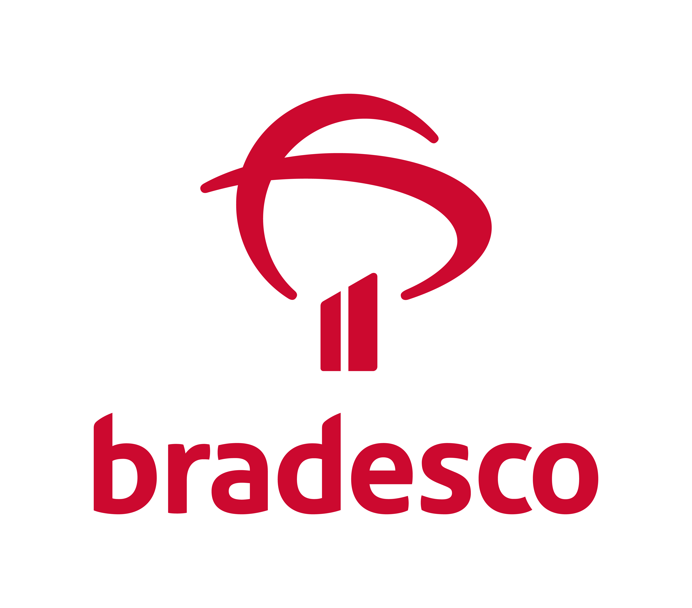

Sistema de Análise de
Cotas de Fundos de Investimento
O futuro começa agora.
Área de Risco · 2026
que calcula risco de ponta a ponta
Do documento bruto da CVM à decisão do analista — sem digitação, sem planilha intermediária, sem ponto cego na cadeia.
as mesmas estrelas, agora legíveis
Cada ponto é um fundo.
Cada cor, um risco.
Agrupados por classe. O que era uma nuvem indistinta de 31 mil fundos passa a ter forma, densidade e pontos de atenção.
01 · O ponto de partida
O trabalho era ler.
A classificação de risco de um fundo dependia de alguém abrir o PDF do relatório do auditor, encontrar a seção de opinião, interpretar o que estava escrito e digitar o resultado numa tela como esta.
02 · A dimensão do problema
O que existe para ser lido.
Um analista experiente lê um relatório em 4 minutos. Os 38.950 documentos com texto extraído levariam cerca de 2.600 horas — mais de um ano de trabalho em tempo integral, para uma única passagem.
02 · Como funciona a infraestrutura
Onde a IA realmente atua.
Nem tudo precisa de modelo. A coleta e a cadeia são determinísticas — rápidas, baratas e exatas. A IA entra só onde há texto para interpretar.
Dos 39 mil documentos, a triagem determinística resolve 61% sem custo de modelo. A IA lê os 15 mil restantes — e é onde ela vale o que custa.
03 · A virada
Trocar o esforço por infraestrutura.
04 · Como a IA decide
A IA não opina. Ela aplica uma matriz.
Pedir uma nota de risco a um modelo produz resultado instável e indefensável. Em vez disso, ele responde duas perguntas objetivas — e a classificação sai do cruzamento.
Reprodutível, auditável e recalibrável: mudar a política de risco é editar uma célula, não reescrever um modelo.
05 · O que já roda
Do piloto à produção.
O sistema sabe quando não sabe.
de fundo em risco de continuidade.
06 · A interface
O risco deixou de ser lista. Virou mapa.
Um fundo raramente carrega o próprio risco: ele herda da cadeia em que investe. A tela mostra a estrutura inteira, com o tamanho de cada nó representando a exposição real do patrimônio analisado.
07 · O princípio
A IA não decide. Ela prioriza.
Modelo, versão da matriz e data ficam gravados. Daqui a um ano ainda se sabe com o que cada fundo foi classificado.
A tela separa visualmente o fato do documento da leitura da IA. Ninguém confunde uma coisa com a outra.
Documento ilegível vira indeterminado, nunca baixo. Fundo sem análise não é fundo seguro.
O analista confirma, questiona ou escala. A IA entrega a fila ordenada — não a decisão.
O que vem a seguir
Severidade × exposição
A próxima camada cruza o risco de cada fundo com quanto a rede realmente tem investido nele. Uma abstenção num fundo sem investidores é ruído. Uma ressalva numa cadeia de meio bilhão é prioridade um.
08 · O sistema em uso
É assim que o analista vê.

Existem riscos críticos na cadeia deste fundo que contraindicam o investimento: 2 fundos de risco alto, 51,2% do patrimônio.
Demonstrações financeiras
Prestadores de serviço
Histórico de prestadores
Fatos relevantes IA
Clique no cartão da DF de 2026 para abrir a análise da IA. Dados ilustrativos. Os nomes de fundo desta tela são fictícios.